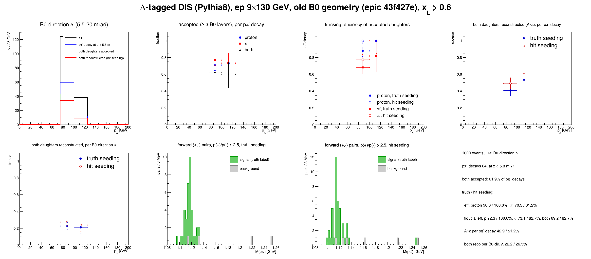
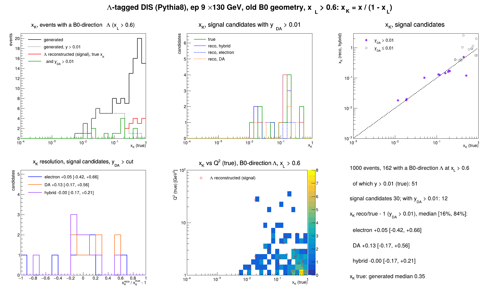

Kaon structure function at 9×130: clean high-\(x_L\) Λ sample in the B0, \(Q^2\) from the electron to a few percent, x from a hybrid of the double-angle and electron methods.
Latest conclusion
Below y ≈ 0.01 no method measures x: half of the hadronic \(E - p_z\) goes beyond the detector. With \(y_{\mathrm{DA}}\) > 0.01, 13 of 32 Λ candidates remain and \(x_K\) is measured to about 20 % (old B0).
Next
10 000 more 9×130 Λ-tagged DIS events are done (condor, 2026-11-25), reconstructed with EICrecon main that now includes B0 hit seeding. Next: rerun the kaon SF steps with 10× the statistics. Later: the kaon EM form factor, then Λ polarization.
The first study reconstructed the Λ mass from B0 tracks, step by step: a single-Λ particle gun (50–275 GeV, 8–18 mrad), then Pythia8 Λ-tagged DIS at 18×275 and 9×130, in the old and new B0 geometry. Full detail is in notes/claude_summary.md, sections 1–11.
Seeding. B0 tracks of Λ daughters need seeds for secondaries (EICrecon#2901) or hit seeding (EICrecon#3116, still open). Hit seeding finds a seed for every accepted daughter.
Mass. Peak at the PDG mass with σ ≈ 6–7 MeV. Without truth, a momentum-ratio cut p(+)/p(−) > 2.5 keeps 98 % of the signal.
Soft \(\pi^-\). \(\pi^-\) below about 10 GeV are often lost in the track finder (CKF). Not a seeding problem; cause still open.
Λ-tagged DIS generation. Pythia8 NC DIS, \(Q^2\) > 1 GeV², events kept only with a Λ at θ < 25 mrad. At 9×130: 8.8 % of events have a Λ at any angle, 6.7 % one below 25 mrad (the filter), 4.6 % one in the B0 range, 1.0 % one in the B0 range with \(x_L\) > 0.6.
Decay before the B0. Follows \(\mathrm{BR}\cdot\left(1-e^{-L/\lambda}\right)\) with \(\lambda = p\,[\mathrm{GeV}]\cdot 7.07\ \mathrm{cm}\) and \(L = 5.8\ \mathrm{m}\); a Λ that has not decayed by 6 m nearly always interacts in material.
Geometry. The new B0 (AC-LGAD stations) covers 56 % of straight lines at 5.5–20 mrad, against 92 % for the old disks. It has a ±45° gap on the electron side and a larger effective beam hole.
Λ-tagged DIS, all \(x_L\), hit seeding
18×275 old
18×275 new
9×130 old
9×130 new
B0-direction Λs (1000 events)
417
417
703
703
both daughters accepted, per \(p\pi^-\) decay
53.2 %
16.0 %
51.9 %
21.8 %
acceptance × efficiency per \(p\pi^-\) decay
36.1 %
10.2 %
31.2 %
12.6 %
reconstructed per B0-direction Λ
18.7 %
5.0 %
16.8 %
6.7 %
mass ±10 MeV: signal / background
54 / 54
18 / 10
89 / 24
34 / 8
Λ-tagged DIS 9×130, all \(x_L\)
Spectrum, acceptance, tracking efficiency, A×ε, yield and mass (truth and hit seeding) for all B0-direction Λs.
B0 coverage, old vs new geometry
Where straight lines from the interaction point cross the B0 stations, with the beam pipe, the electron final-focus quadrupole and the B0 magnet bore.
Study 2 · from 2026-11-19 · in progress
Kaon structure function
Sullivan process, \(e\,p \to e'\,\Lambda\,X\): the photon probes a virtual \(K^+\) around the proton, and the fast Λ tags the event. The measurement needs the Λ (\(x_L\), t), the event kinematics (x, \(Q^2\), y) and then \(x_K = x/(1-x_L)\), in the region of high \(x_L\) and small \(|t|\). Results are in results/11_kaon_sf.
Analysis chain
done
Where the Λs go
High-\(x_L\) Λs reach the B0 at 9×130 and 10×100, not at 18×275.
done
\(x_L\) and t of the Λ
\(x_L\) to 1.4–3.3 %, \(|t|\) to 0.05–0.08 GeV² (no beam effects yet).
done
\(Q^2\) from the electron
A few percent, once the frame is right.
limited
x at low y
Double-angle at low y, electron above 0.05. No method works below y ≈ 0.01.
next
Sullivan signal sample
eicMesonSFGen through our simulation and reconstruction, with the afterburner.
to do
Statistics
More 9×130 events: only 13 usable candidates per 1000 events now (old B0).
to do
Beam effects
Angular divergence and momentum spread, for a realistic \(|t|\) resolution.
to do
Extraction
A×ε in (\(x_K\), \(Q^2\), t, \(x_L\)) bins, backgrounds (\(\Sigma^0 \to \Lambda\gamma\), fragmentation Λs), kaon flux, t extrapolation.
Step 0 · 2026-11-19 and 11-25
Where do the kaon-structure-function Λs go?
Question
The Λ-tagged DIS samples put many Λs into the B0 at 18×275. Are these the Λs a kaon structure function measurement needs, and do we need a different sample?
Method
Count generated Λs by \(x_L\) and by angle from the proton beam, in two kinds of sample:
the ePIC campaign Sullivan sample EXCLUSIVE/MESON_SF_ABCONV/eicMesonSFGen-1.0.0 (\(K^+\Lambda\), 2–4 files of 100 events per beam energy);
The angle is roughly \(p_T/(x_L E_p)\). \(p_T\) is 0.4–1.2 GeV at every beam energy, so the angle halves from 130 to 275 GeV and the high-\(x_L\) Λs fall below the B0's 5.5 mrad edge.
Of the 417 Λs in the B0 direction in the 18×275 DIS sample, 404 have \(x_L\) < 0.6. They come from fragmentation of the proton remnant.
The Sullivan sample has a hard edge, \(\theta_{\max}\,E_p \approx 1.5\ \mathrm{GeV}\), so the 0 at 18×275 is not a statistics effect.
Finding
The campaign Sullivan files are unweighted phase space (checked 2026-11-25). eicMesonSFGen 1.0.0 is JeffersonLab/eic_mesonsf_generator v1.0.0. It samples \(Q^2\) uniformly, ln x uniformly and the Λ isotropically in the proton rest frame, and puts the physics (inclusive DIS × kaon splitting function × kaon F2) into a weight that the HepMC output does not carry. The hadronic system X is not generated: the "\(K^+\)" in the files has momentum \(-q\). At 9×130 the median \(Q^2\) is 185 GeV², against 2 GeV² in Pythia DIS.
So the Sullivan fractions in the table above are phase-space fractions, not rates. The angle scaling with beam energy is kinematics and stands.
Conclusion
The B0 measurement of the kaon structure function is a 9×130 / 10×100 measurement. At 18×275 the Λ goes to the ZDC, the Roman pots and the off-momentum detectors. The Pythia sample is the right final state to start with; the Sullivan generator is needed later as the signal model, run by us with its weight kept and X hadronized.
Step 1 · 2026-11-25
High-\(x_L\) Λs at 9×130: acceptance, mass, \(x_L\) and t
Question
How many Λs with \(x_L\) > 0.6 does the B0 reconstruct at 9×130, how clean is the mass peak, and how well are \(x_L\) and t measured?
Method
New argument xLMin in macros/dis/lambda_dis.C (default 0 leaves the old results unchanged; checked).
The cut applies to generated B0-direction Λs (for acceptance and efficiency) and to the reconstructed (+,−) pairs (for the mass, no truth used in the selection).
Result
9×130, \(x_L\) > 0.6 (162 B0-direction Λs)
old B0
new B0
both daughters accepted, per \(p\pi^-\) decay
61.9 %
30.1 %
acceptance × efficiency per \(p\pi^-\) decay (truth / hit seeding)
42.9 / 51.2 %
19.2 / 24.7 %
reconstructed per B0-direction Λ (truth / hit)
22.2 / 26.5 %
8.6 / 11.1 %
mass ±10 MeV, hit seeding: signal / background
31 / 2
11 / 0
\(x_L\) reco − true: mean, RMS
+0.012, 0.033
−0.010, 0.014
\(|t|\) reco − true: mean, RMS [GeV²]
−0.025, 0.080
−0.003, 0.049
Compared with no cut, acceptance and \(\pi^-\) efficiency are higher (the \(\pi^-\) is harder) and the combinatorial background almost disappears.
No generated Λ in the B0 has \(|t|\) below about 0.5 GeV²: the B0 starts at 5.5 mrad, so \(p_T\) ≳ 0.5 GeV.
Acceptance, efficiency and mass

Top: spectrum, acceptance, tracking efficiency, A×ε per \(p\pi^-\) decay. Bottom: yield, mass with truth and hit seeding (green = truth-labelled signal), main numbers.
\(x_L\) and \(|t|\)
\(x_L\) and \(|t|\) of the selected Λs (black generated, red reconstructed), and the resolution of the reconstructed Λ.
Conclusion
At 9×130 the B0 delivers a clean high-\(x_L\) Λ sample with good \(x_L\) and t resolution. The lowest \(|t|\) is out of the B0's reach. The new geometry keeps about 40 % of the old geometry's yield.
Step 2 · 2026-11-25
DIS kinematics from the scattered electron
Question
How well do we measure x, \(Q^2\) and y for these events from the scattered electron?
Method
Start from EICrecon's InclusiveKinematics* collections; recompute the true kinematics from the beams and the scattered electron (agrees exactly with InclusiveKinematicsTruth).
Compare the reconstructed electron track with the true electron.
Compute \(Q^2\), x and y as Lorentz invariants from the true beam four-vectors of each event and the reconstructed electron track (macros/kaon/kaon_kinematics.C).
Finding
Our simulation tilts the electron beam by 25 mrad. ddsim's --crossingAngleBoost -0.025 is a pure boost, so both beams get \(p_x/E = -0.025\). In the official campaign files (ePIC afterburner) the electron beam runs along −z. The proton side is the same in both, so the B0 / Λ results stand. EICrecon assumes the campaign layout, so its reconstructed kinematics are wrong for our samples (\(Q^2\) spread ±25 %, although the electron track itself is measured to 0.3 mrad).
Result
The scattered electron is found in 97–98 % of events. \(Q^2\) is good to a few percent at all y.
x from the electron fails at low y: −90 % at y < 0.01 (y even comes out ≤ 0 in a third of these events), −33 % [−73 %, +74 %] at 0.01–0.05, ±25 % at 0.05–0.2.
Of the 162 events with a high-\(x_L\) Λ in the B0 direction, 111 have y < 0.01, 29 have 0.01–0.05 and 22 have y > 0.05.
Conclusion
\(Q^2\) is fine, but the high-\(x_L\) Λ events sit at very low y, where the electron method can't measure x. That led to step 3.
Step 3 · 2026-11-25
Hadronic-final-state methods and \(x_K\)
Question
Can the hadronic final state recover x at low y, and how well is \(x_K = x/(1-x_L)\) then measured?
Method
Frame. Undo the ddsim boost with \(\beta_x = -p_x/E\) of the summed true beams. Both beams then lie along z to better than \(10^{-10}\) GeV.
Hadronic final state. All ReconstructedParticles (tracks and ECal clusters; no HCal) except the scattered electron: \(\Sigma_h = \sum (E - p_z)\) and \(p_{T,h}\).
Methods. Jacquet–Blondel (JB), double-angle (DA), Σ, eΣ, and a hybrid: DA when the reconstructed \(y_{\mathrm{DA}}\) < 0.05, the electron method otherwise.
Closure. The same formulas on the generated final state reproduce the true x (−6 % at y < 0.01 from the neglected proton mass).
Where \(\Sigma_h\) goes. Generated \(\Sigma_h\) split by particle type and angle.
Result
x reco/true − 1, true y
electron
JB
DA
Σ
hybrid
< 0.01 (494)
−0.90 [−0.98, −0.57]
−0.45 [−0.91, +0.56]
−0.01 [−0.67, +0.83]
+0.43 [−0.26, +2.90]
−0.02 [−0.68, +0.82]
0.01–0.05 (289)
−0.33 [−0.73, +0.74]
−0.07 [−0.60, +0.93]
+0.10 [−0.27, +0.78]
+0.25 [−0.10, +1.23]
+0.13 [−0.24, +0.84]
0.05–0.2 (171)
−0.04 [−0.28, +0.22]
−0.05 [−0.68, +1.54]
+0.31 [−0.24, +1.60]
+0.48 [+0.08, +1.94]
+0.13 [−0.16, +1.58]
0.2–0.5 (35)
−0.02 [−0.06, +0.01]
−0.47 [−0.78, +0.38]
+0.15 [−0.20, +1.04]
+0.37 [+0.10, +1.07]
−0.01 [−0.05, +0.02]
9×130, old B0, all 1000 events; median [16 %, 84 %]; number of events in brackets. New B0 is similar.
Top: x–\(Q^2\) and y of events with a high-\(x_L\) Λ (red: Λ reconstructed), \(x_K\) true and reconstructed, \(x_K\) resolution with \(y_{\mathrm{DA}}\) > 0.01. Bottom: \(Q^2\) resolution (blue ours, grey EICrecon in the wrong frame), x resolution against y for the electron and double-angle methods.
\(x_K\) distributions

Top: \(x_K\) generated (all, y > 0.01) and at the true value for reconstructed signal candidates; reconstructed \(x_K\) per method against the true one for the candidates with \(y_{\mathrm{DA}}\) > 0.01; reco against true event by event. Bottom: resolution per method, \(x_K\) against \(Q^2\) with the reconstructed candidates, numbers.
Generated \(x_K\) spreads over the whole range 0–1, with the most events below 0.1 (median 0.33). Events with y > 0.01 are all below \(x_K\) ≈ 0.2, and so are the candidates that pass \(y_{\mathrm{DA}}\) > 0.01: at 9×130 the y cut limits the reach to \(x_K\) ≲ 0.2–0.3. Candidates below the cut still follow the diagonal with DA (about 20–30 % high), which is worth rechecking with more events.
Conclusion
The double-angle method is the best at low y, the electron method above y ≈ 0.05. Below y ≈ 0.01 no method measures x, because half of the hadronic \(E - p_z\) goes beyond η = 3.5 where there is no detector; adding the HCal would not change that. With \(y_{\mathrm{DA}}\) > 0.01 about 40 % of the candidates remain and \(x_K\) is measured to about 20 % (old B0, 12 events). \(x_K\) bins must be wide, and the hybrid switch point still needs tuning.
Study 3 · planned next
Kaon electromagnetic form factor
Exclusive \(e\,p \to e'\,K^+\Lambda\). The forward Λ is tagged in the B0 as in the other studies, plus the exclusive \(K^+\) in the central detector and the reconstruction of t.
Needs an exclusive generator (check what ePIC uses).
Reuses the Λ reconstruction, \(x_L\) and t from the kaon structure function work, and the frame handling from step 3.
Study 4 · planned
Λ polarization
The Λ's self-analysing decay gives its polarization from the proton angle in the Λ rest frame. That needs the full \(p\pi^-\) reconstruction and its angular acceptance × efficiency.
Can start from the existing DIS samples.
Pythia does not polarize the Λ: reweight the decay angle, or use a generator with polarization.
Open issues
decide
Electron side of the simulation. ddsim --crossingAngleBoost tilts the electron beam by 25 mrad. Redo with the ePIC afterburner before using electron acceptance or EICrecon kinematics. B0 / Λ results are unaffected.
next
Kaon SF signal sample. Two candidate generators. eicMesonSFGen: run it ourselves at 9×130 / 10×100, keep its cross-section weight and hadronize X (the campaign files have neither). tagged-Lambda-DIS (EicC study, arXiv:2109.08483): already unweighted with exact e′ and Λ kinematics, but ROOT-tree output only, no X, and the Λ forced to \(n\pi^0\). Either way, then our chain with the afterburner. Also: more statistics, tune the hybrid switch, kaon flux and t extrapolation, beam effects for \(|t|\).
open
Soft \(\pi^-\) lost in the CKF; old-geometry truth-seeded efficiency jump between EICrecon builds; +2 MeV mass shift in the old geometry.
open
Real events (other tracks, beam background) will need vertexing and decay-length cuts.
done
More statistics. Condor cluster 20204682 finished on 2026-11-25: 20 / 20 jobs OK, 10 000 events at 9×130 (seeds 403–422, both geometries; 152 781 generated). Analysis rerun on them is next. The eic-shell container is now pinned (the daily nightly broke our builds), and EICrecon main includes B0 hit seeding (#3116, merged 2026-11-23). New files end in .eicreconmain1125.edm4eic.root; the existing 1000 events used the older PR build.
Definitions
B0-direction Λ
Generated Λ at 5.5–20 mrad from the proton beam (beam frame, 25 mrad crossing angle undone).
Accepted daughter
Its own simulated hits in at least 3 B0 layers.
Truth / hit seeding
B0 tracks seeded from the true vertex and momentum (EICrecon#2901), or from triplets of hits (EICrecon#3116).
Old / new B0
epic 43f427e (silicon disks) and epic ec774d8 (AC-LGAD stations, eic/epic#1194).
Sullivan process
\(e\,p \to e'\,\Lambda\,X\): the proton fluctuates into Λ + virtual \(K^+\), the photon probes the \(K^+\).
\(x_L\)
Λ momentum along the proton beam divided by the beam momentum.
\(|t|\)
\(-(P_{\mathrm{beam}} - P_\Lambda)^2\), the four-momentum transfer to the Λ.
\(x_K\)
x / (1 − \(x_L\)), the momentum fraction of the struck quark in the kaon.